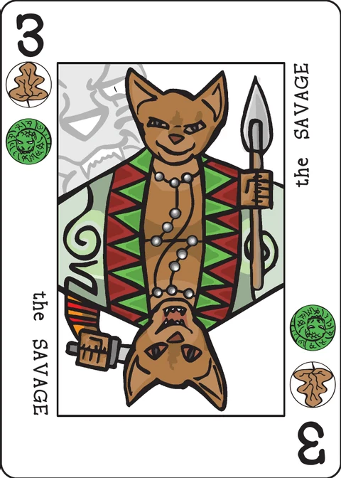

Head Solitaire
a Decktet solitaire game that does not require a playing surface
| Designed by | David L. Van Slyke |
|---|---|
| Players | 1 |
| Length | Short |
| Extra material | None |
Setup
Shuffle a basic (not extended) Decktet and hold it in one hand face-down as a draw pile.
Note: You will soon be holding four piles, one upon another, in one hand. On top is a face-up hand of six cards. Behind it is the draw pile. Behind that, face-up and rotated ninety degrees, is the archive of melds. Behind that is the discard pile.
Game play
Definition
A meld is a set of cards fulfilling one of the following conditions:
- contains exactly one instance of each of the six suits (a suit-meld)
- a set of three or more cards of the same rank (a kind-meld)
- a set of three or more cards of consecutive ranks that all share a single suit (a run-meld)
Note that Aces and Crowns are not considered consecutive: the counting does not "wrap around".
Part One
Turn over six cards and hold them face-up on top as your hand. If this group of six cards contains a meld, place the meld face-up and rotated ninety degrees directly behind the draw pile; then draw more cards to refill your hand to six cards. If the six cards contain no melds then re-order them as you desire and discard them face-up at the back of all the cards you are holding; then draw six more cards as your new hand.
Interlude
After exhausting the initial draw pile, the discard pile becomes the new draw pile. It stays face-up. Move it from behind the archive of melds to in front of the archive of melds. If you have a partial hand of cards then your hand is refilled to six cards from the top of this new draw pile. If you had no cards in your hand at this time you have the option of immediately discarding the top card of the new draw pile before drawing a hand of six cards.
Part Two
Go through the second draw pile as before but do not worry about sorting the cards you discard.
The game is over after you go through the second discard pile. Count the number of cards not in melds (in your third discard pile). This is your score: the lower the better. Keep track of your lowest score for the week.
The Extended Deck
If the extended Decktet is used: The Excuse counts as any single suit or rank. Pawns and Courts have three suits but no rank.
Variants
The wiki lists no variants for Head Solitaire.
Note on this implementation
A card counts for each of its suits. Most Decktet cards bear two suits, so the wiki's meld definitions are read with a card "counting as" every suit it bears: a suit-meld's cards must bear the six suits exactly once between them — the six Aces qualify, and so do three dual-suit cards whose suits are disjoint (say the Desert, the Journey and the Market). A run's cards must each bear one single shared suit, so the A, 2 and 3 of Moons is a run of Ace-of-Moons, the Author (Moons and Crowns) and the Journey (Moons and Waves).
A numbered three-of-a-kind is both a suit-meld and a kind-meld. The three cards of any rank 2–9 split the six suits between them, so "three 7s" fulfils the suit-meld and the kind-meld conditions at once. The app accepts it either way and labels it "Suit + kind meld".
One meld per refill. The wiki words the turn in the singular — "place the meld … then draw more cards to refill your hand to six cards" — so the app lets you place one meld at a time and refills after each one. A hand that contains a meld must meld it; the discard is only offered when no meld is present, which is how the two branches of Part One are written.
The new draw pile comes out oldest-first. You discard "at the back of all the cards you are holding", so the front of the discard pile — the end you draw from once it moves in front of the archive — holds the cards you discarded first. The app therefore feeds the second pass from your earliest discards forward, which makes "re-order them as you desire" a way to set up the order in which you will see those cards again. Tap one hand card and then another to swap them; a Hint button will point at a meld if you cannot spot one.
The score is the pass-two discard pile: every card you saw in the second pass that did not end up in the archive. The game ends when the second draw pile is spent and your hand is empty. Melds are shown upright rather than rotated ninety degrees, for screen readability.
Credits
Original design: David L. Van Slyke. A "head solitaire" is a kind of solitaire that requires no playing surface. Many were popular during the era of British sailing merchant ships.
These rules are copied from the Head Solitaire page of the Decktet wiki (page revision 6, 24 March 2021) so they can be read offline, under the wiki's CC BY-NC-SA 3.0 licence. Wiki rules text by P.D. Magnus; cards by P.D. Magnus, same licence.